student
calibration: over · 15 rows

student
calibration: over · 15 rows

student
calibration: well · 22 rows

student
calibration: over · 38 rows

student
calibration: over · 64 rows

shift_worker
calibration: over · 53 rows

shift_worker
calibration: well · 63 rows

shift_worker
calibration: over · 92 rows

shift_worker
calibration: over · 149 rows
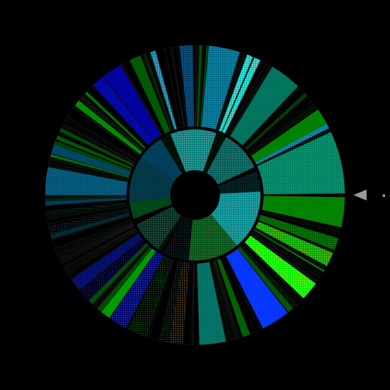
shift_worker
calibration: well · 215 rows
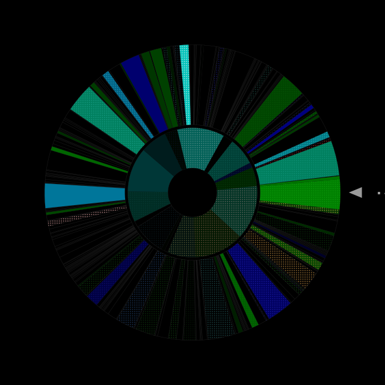
carer
calibration: under · 56 rows

carer
calibration: under · 120 rows
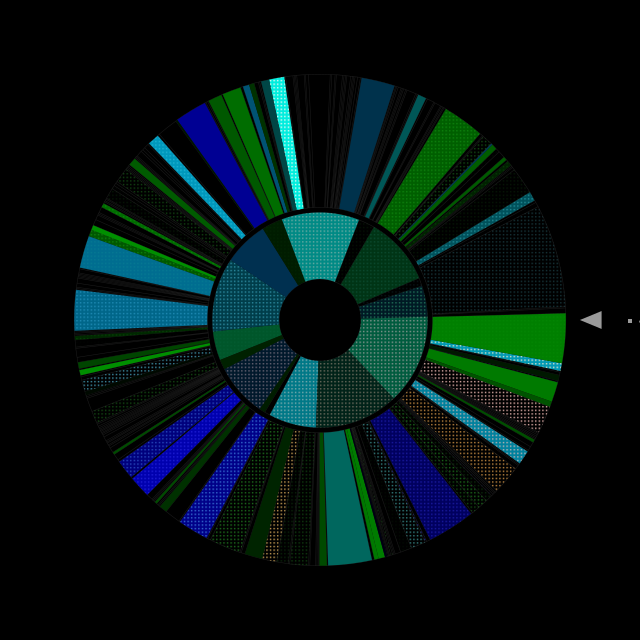
carer
calibration: over · 90 rows

carer
calibration: over · 174 rows

carer
calibration: under · 187 rows

small_business_owner
calibration: well · 76 rows
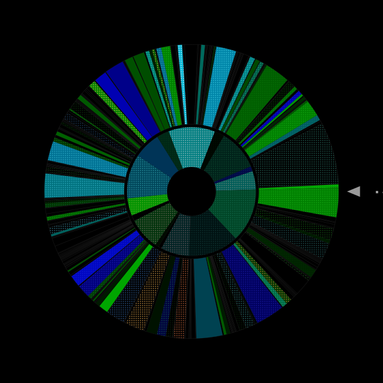
small_business_owner
calibration: over · 100 rows
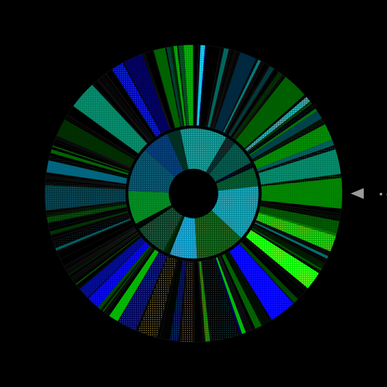
small_business_owner
calibration: over · 142 rows

small_business_owner
calibration: well · 169 rows

small_business_owner
calibration: under · 164 rows

researcher
calibration: well · 54 rows

researcher
calibration: under · 78 rows
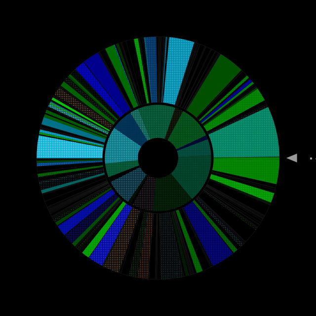
researcher
calibration: over · 129 rows

researcher
calibration: well · 189 rows

researcher
calibration: under · 221 rows

retiree
calibration: over · 175 rows

retiree
calibration: under · 160 rows
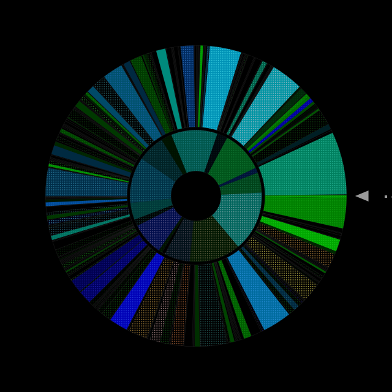
retiree
calibration: well · 246 rows

retiree
calibration: under · 158 rows
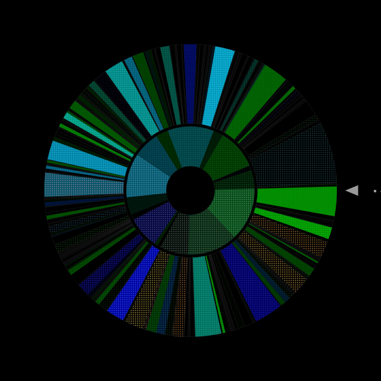
retiree
calibration: under · 196 rows
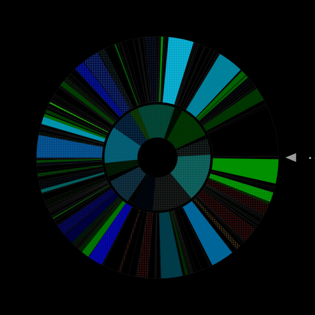
career_changer
calibration: well · 44 rows

career_changer
calibration: over · 80 rows
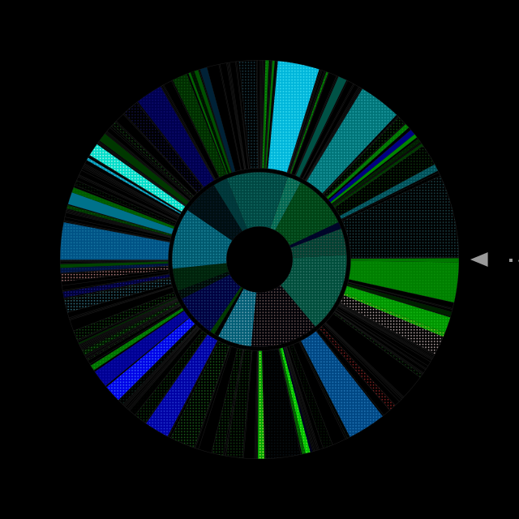
career_changer
calibration: well · 115 rows
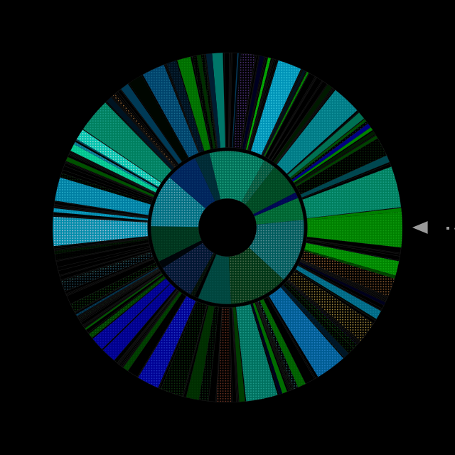
career_changer
calibration: under · 140 rows
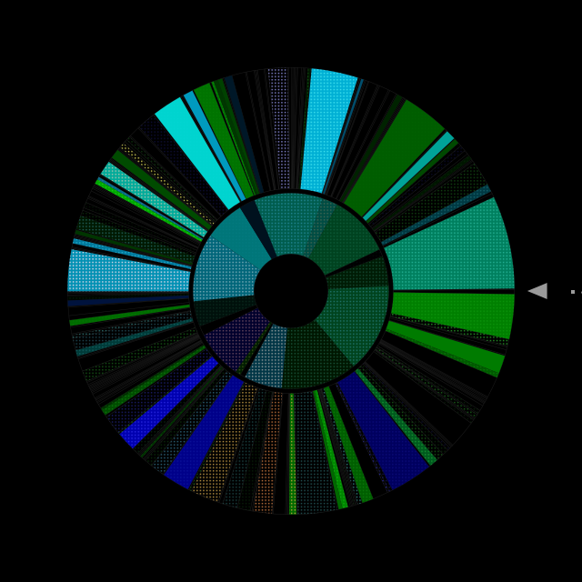
career_changer
calibration: well · 158 rows

generalist
calibration: over · 34 rows

generalist
calibration: over · 100 rows
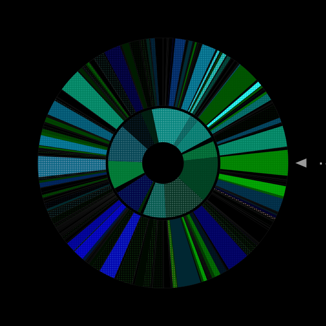
generalist
calibration: well · 150 rows

generalist
calibration: well · 157 rows

generalist
calibration: well · 192 rows